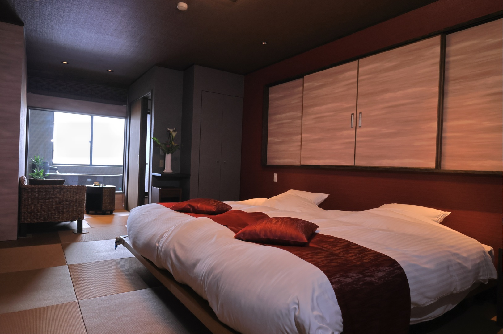
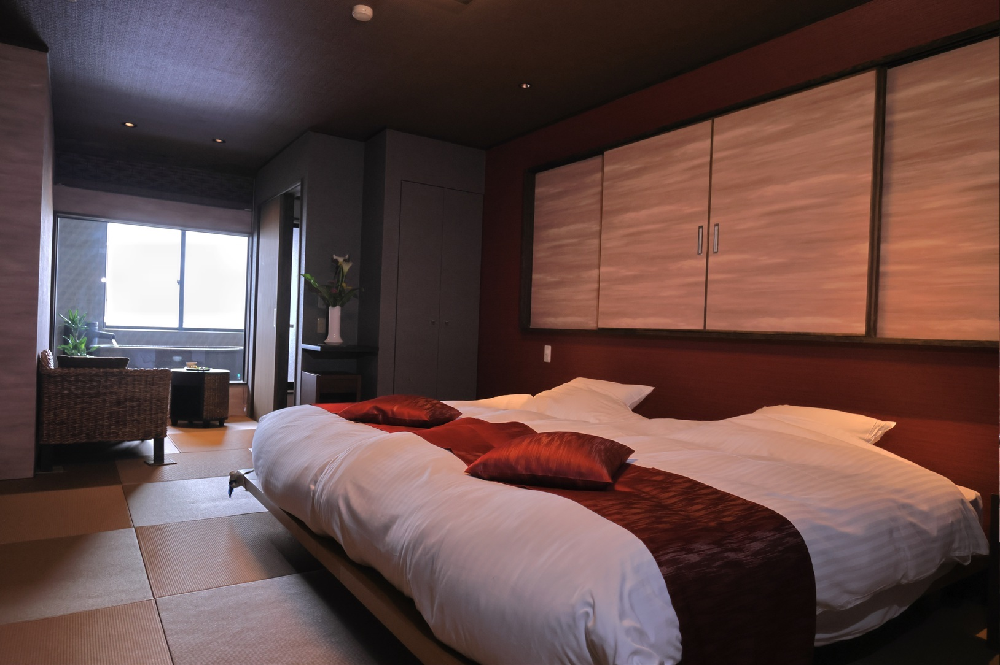

お部屋Rooms

お部屋Rooms
ぬくもりあふれる和の空間


 



客室「汐音・Aタイプ・Bタイプ」の計5部屋には客室内にダイニングルームを設置し、セパレートタイプとなっております。
まったりとお食事して頂ける人気のお部屋食でありながら寝室、リビングにはスタッフも立ち入らないプライベート重視の造りになっております。
部屋食のデメリットでもあった客室に残る食事の匂いや部屋に入られたくない、
「部屋食はだらしなく感じる」といったお部屋食を拒むお声も参考にさせていただき、 お部屋食とお食事処メリットを取り入れた造りとなっております。
お食事専用のダイニングにてまったりとお部屋食をお楽しみください。
※汐華・花緑はダイニングルームはございません。
人数によってはお食事部屋を別途ご用意する場合がございます。
| 客室設備・備品 | |
|---|---|
| 客室設備 | |
| お風呂 電話 冷蔵庫 トイレ テレビ 湯沸ポット ヘアドライヤー 貴重品金庫 フリーWi-Fi | |
| 備品 | |
| 足袋 浴衣・羽織 バスタオル バスローブ フェイスタオル ボディーソープ ウォッシュボール シャンプー コンディショナー シャワーキャップ くし 歯磨きセット ヒゲソリ リキッド類 綿棒 コットンセット ひざ掛け |
|
| 貸出品 | |
| 加湿器 湯たんぽ 選べる枕 | |
| 詳細情報 | |
| チェックイン15：00/チェックアウト10：00 総客室数7室 全室禁煙（喫煙所あり）館内フリーWi-Fi完備 詳細はこちら |